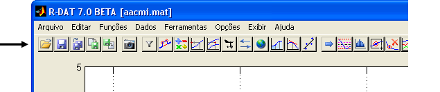
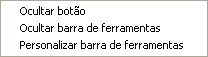
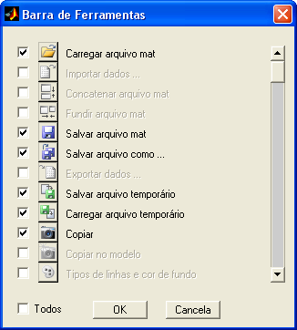
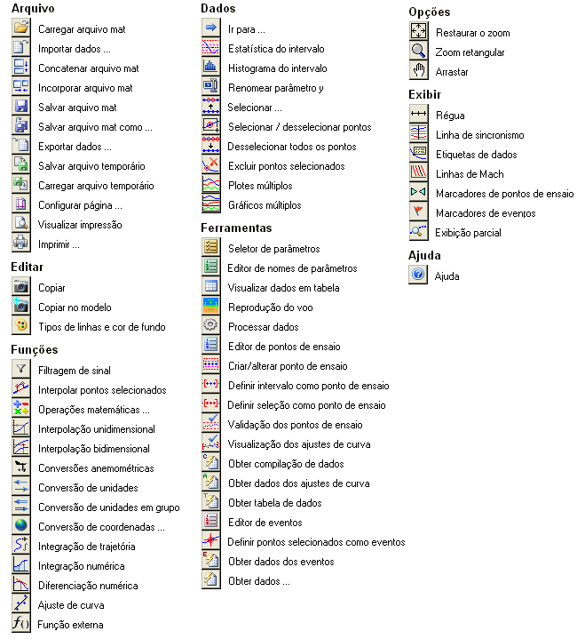

| Menu Exibir |
|
A Barra de
Ferramentas contém os
botões de acesso às principais funções e operações do R_DAT.
O menu
“Exibir” possibilita ao usuário habilitar/desabilitar e personalizar da
Barra de
Ferramentas.

Exibir /
Ocultar a Barra de Ferramentas
Para desabilitar a exibição da Barra de Ferramentas, desselecione a opção “Barra de ferramentas” no menu “Exibir”, ou clique com o botão direito do mouse sobre a Barra de Ferramentas e escolha a opção "Ocultar barra de ferramentas".
Para exibi-la
novamente, selecione novamente a opção.
Por default, o R_DAT
sempre inicia com a exibição da Barra de
Ferramentas habilitada.
Personalizar a
Barra de Ferramentas
Para personalizar a Barra de Ferramentas, clique no menu “Exibir ► Personalizar barra de ferramentas”, ou clique com o botão direito do mouse sobre a Barra de Ferramentas e escolha a opção desejada:

A opção
"Ocultar botão" ocultará o botão clicado com o mouse.
A opção "Ocultar barra de ferramentas" ocultará toda a Barra de Ferramentas.

A janela
apresenta a lista completa de botões disponíveis,
com uma imagem e o nome das respectivas funções.
Os botões
habilitados são apresentados em cores e com uma
marcação à esquerda.
Use as caixas
de seleção para habilitar ou desabilitar os
botões conforme desejado.
Para selecionar todos os botões, clique na caixa "Todos".
Use a barra de
rolagem à direita para percorrer a lista
completa de botões.
A lista a seguir apresenta todos os botões disponíveis para a Barra de Ferramentas, agrupados segundo o respectivo menu:

Caso a
quantidade de botões habilitados ultrapasse a largura
da janela principal do R_DAT,
uma nova linha de botões
será criada.
A definição da Barra
de Ferramentas será lembrada pelo R_DAT
nas
sessões subsequentes.
| |
Menu Exibir |
Régua |
|